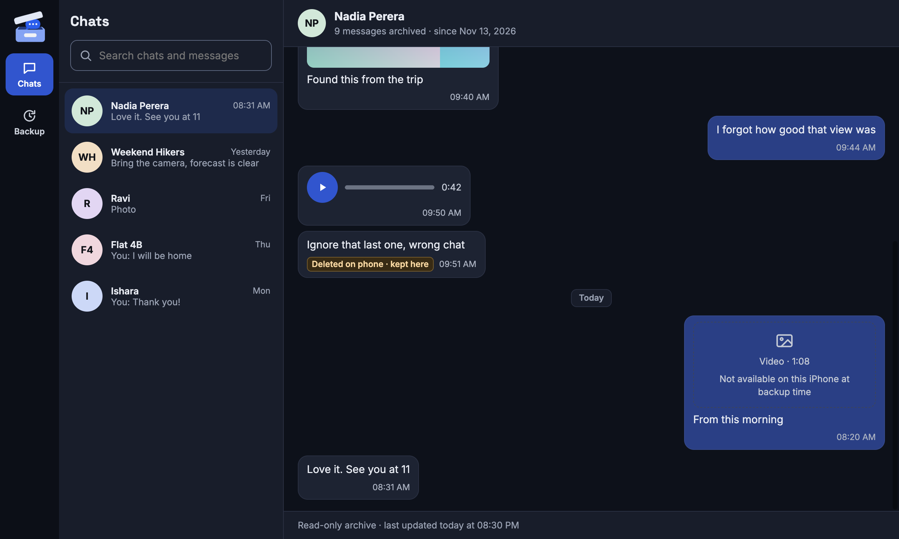

Keep your iPhone chats on your own computer
Shoebox is a free, open-source desktop app for macOS and Windows. It backs up your iPhone, copies your chats into an archive that only grows, and lets you read them offline.
macOS and Windows · MIT licence · nothing is installed on the iPhone
Early build: not yet tested with a real iPhone. Everything that can be tested without a phone is tested. You can try the whole app on sample chats with mock mode.

What it does
Backs up your iPhone
Makes an encrypted backup on your computer using Apple's own backup protocol.
Keeps what you delete
Chats, photos, videos and voice notes go into an archive that only grows. Messages you later delete on the phone stay.
Lets you read and search
A read-only viewer shows the archive, with search across chats and messages.
Repeats every day
Runs from the menu bar or system tray, over Wi-Fi after the first cabled connection.
Optional Google Drive copy
If you turn it on, an encrypted copy of the archive is uploaded to your own Google Drive.
Which chats?
The app reads the WhatsApp data inside the iPhone backup. On iPhone, WhatsApp itself only backs up to iCloud.
Privacy
- Fully offline. No analytics, telemetry, crash reporting or update checks, and no remote fonts or scripts.
- The only network traffic is Google sign-in and Drive upload, and only after you turn Drive sync on. Everything else is blocked in the app, and a test proves it.
- Chat content, names, numbers, passwords and keys are never written to logs.
- Your archive is stored unencrypted in your user folder, protected by your computer login. Turn on FileVault or BitLocker.
- It cannot put chats alone back into the chat app. The full iPhone backup it keeps can restore a whole iPhone with Apple's tools.